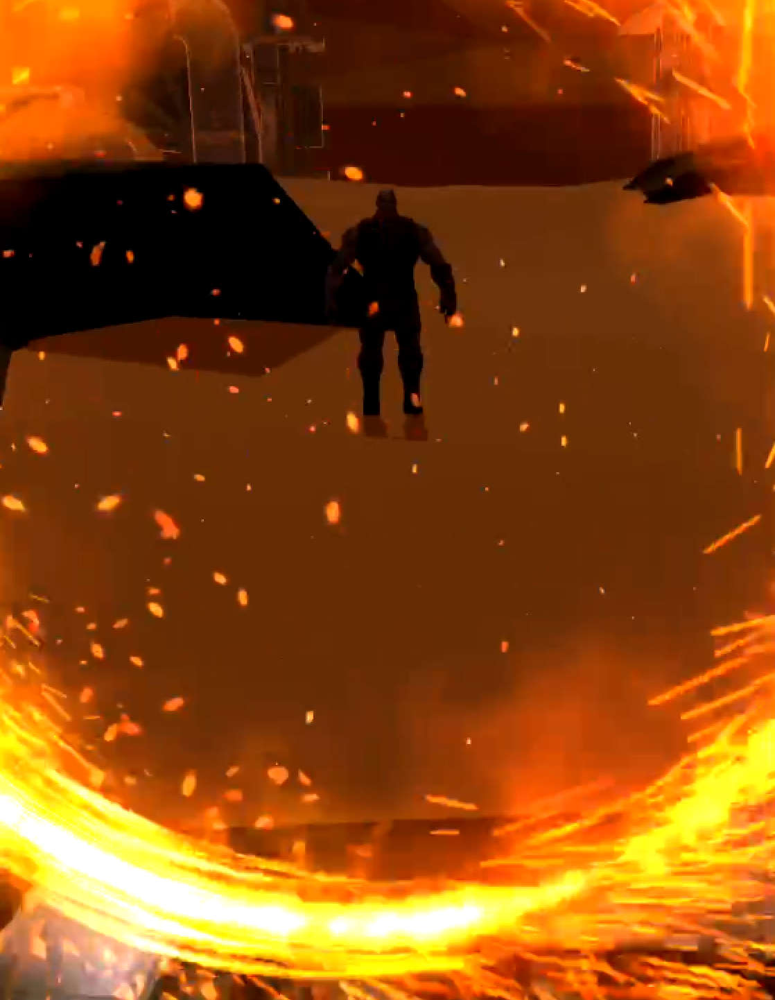
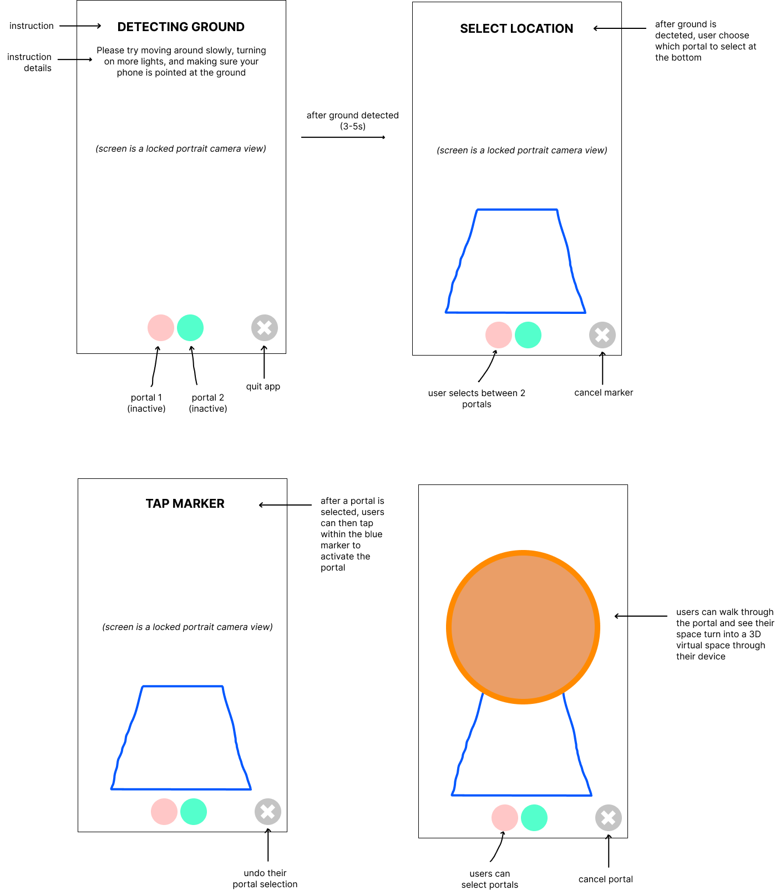
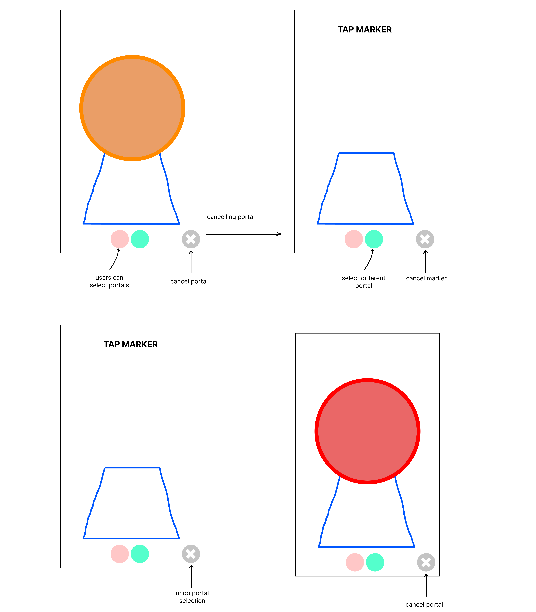

An Augmented Reality portal developed and designed as part of an application process.
background
For this AR Exercise, I wanted to challenge myself and learn ARKit. Because of my past experience using/implementing AR markers via Vuforia, I decided to develop the XR Portal and learn about markerless AR. For my app, I made a simple XR portal that portrays the Marvel franchise Doctor Strange where users create portal(s) to travel throughout the multiverse. Users simply choose a location they want to go to and tap on the screen to summon the portal in which they can enter the portal and explore the world inside.

brainstorming
To understand the possibilities, I looked at all possibilities for solutions including both markerless AR and AR marker. For this process I wrote/sketch ideas that could be applied using AR and in turn applying those to mediums - Unity, Vuforia, ARKit/ARCore - to determine whether markerless AR or AR markers best suits the theme/design goals. Here are the list of ideas I came up with:
1) Book promotion: Game of Thrones (AR Packaging)
Functionalities
Readers scan a specific page on the book which reveals more information about: characters, abilities, certain lores, locations in the world. For example, video/animation showing abilities and 3D models for character description.
Gives better visualization of what the author intended for the worldmaking.
Technology? Vuforia, Unity (something I have worked with before)
Where? In between book chapters/transitions/prologue/epilogue
Drawbacks, Constraints
Book should be open for interpretation?
Might be awkward to use when reading (can distract the user from reading)
2) Music AR Guide Manual (AR Instruction Manual / AR Packaging)
Functionalities
Music training app to help beginners better understand/read better music notations, symbols, notes, rhythms, etc.
AR Scan on music sheet. The scan identifies music notations and explains it to the user on a device as a UI.
Drawbacks, Constraints
Potentially limited to beginner only usage. More experienced users are less likely to need/use the app.
Camera would have to constantly updated when parts of a sheet is finished and/or if rhythm changes (ie. Jazz)
Potential problems: AR marker would have to be considerably accurate.
What instrument to portray? Piano?
3) Doctor Strange Sling Ring Portals (XR Portal)
Functionalities
Users make a circle with their hands to make a portal
Phone in front of hand; tracking the hand OR do gesture recognition.
Use some kind of button trigger to set off indicator to let the app know a circle is made. Once it is made, a portal appears.
Locations can be preset or use Google Maps and allow users to teleport to specific locations. Add Thanos location ;)
Users can create multiple portal(?)
Interact with objects in the portal. Fight villains threatening Earth. Use different gesture recognitions to cast different spells.
Drawbacks, Constraints
Using a Google Map feature is ambitious and requires active Internet connection to feature locations around the map. It would somehow have to access Google Maps’ Virtual map to portray on the world.
Preset locations can be limited and boring.
Gesture recognition/hand tracking is not easy to implement and time consuming. Hand tracking would require some kind of AR marker(?)
research
Following the brainstorm process, I did research on each of the following ideas and looked at the potential solutions to solving them. I looked at online guides and tutorials to discover some of the things that are relevant to these ideas, and which guides are best suited to be extended into an appropriate app that meets the required design goals.
Resources for these include:
Apps I looked at: AR Runner, Night Sky, Ikea Place, AR Fitness, World Brush
research development
The completion of these early prototypes helped me identify some of the design goals while developing my portal. It allowed me to better understand which features were capable of implementing and which features can be excluded. With constraints such as time to consider I had to adjust the way in which I want to implement my apps and as such these adjustments included:
Excluding the use of gesture recognition. Implementing gesture recognition from scratch is difficult and very time consuming. Could use another person’s gesture recognition code, however, this is not easily acquired.
Initial plane detection logic: if there is nothing to detect OR the detect is far away at a distance -> for vertical planes
After implementing/testing this feature, plane detection is not as reliable from far away distances and require decent lighting to detect
Changes: Detect only horizontal planes, and at the feet. This avoids players creating portal at only a wall and creates a portal only if there is space in front of them.
Portal Flicker problem -> the logic for entering a portal will flicker
Implement a UI that changes Text as an instructional help as opposed to having a pop-up that explains instructions -> Oversaturated with instructions
Change basic UI buttons to implement different location spawns via the portal. Also add exit/clear button.
Improved/Add features to 3D environment. Make one location a 3D World and another a 360 Video (as locations). Learn 360 Video implementation.
Users cannot create multiple different portals. The AR Hit Test makes it awkward such that the portal have a tendency to spawn on top of each other (assuming I want to keep consistent when spawning initially)
prototype goals
Following the brainstorming process and research, the first steps included building a prototype for an XR Portal. Without prior knowledge of making AR Portals in ARKit, I used several of the resources mentioned above to help develop my own XR Portal. The process to building the app started small and included:
Building a portal that can be entered through and explored.
Have the app detect planes.
Make a simple UI to do simple tasks (print statement)
Create a simple 3D World to explore.
Develop a simple gesture/touch detection.
A brief mockup of the app was made to identify the user flow and user experience. Downloading different kinds of AR apps I compared several of interfaces each of these apps used to get a better understanding of AR design. I would then use this information and ultimately apply it to my own user experience design.
lo-fi mockup + onboarding

using another portal

challenges
Refreshing my skills in 3D computer graphics. Tutorials I watched used mostly shaders, and shaders are an integral part in 3D graphics. 3D computer graphics is not easy and I did not want to simply copy paste the tutorials but actually understand and learn how things worked. Some of the things I did to better understand the code was watching extra tutorial videos and looking at APIs of shaders in Unity. This helped me better understanding the uses of shaders and how they can be applied in AR.
Incorporating all components of each tutorials and trying to combine them. Although individually each component worked on their own, combining them together often did not work as intended and this required time to solve. One of the ways in which I overcame this problem was by making small iterations of one component and gradually adding other components onto it. If somehow by adding one component creates an error to the entire project, I can always refer to past iterations (that worked) such that I can try and understand the problem and solve.
Resolving the flicker issue when a person would enter the portal.
Finding 3D assets to fit a particular theme.
Balancing the design and development. Being in both roles as the designer and developer, it was difficult to balance between the designing an excellent user flow while testing for errors/bugs.
demo video
With that said, I thought the app turned out well and you can check it out. :)
future work
In terms of future work and things I would like to do in the future …
Implementing features for gesture recognition. Rather than create the portal with a simple tap button/screen, the portal should feel earned and have a more positive user experience when mimicking the characters in the movie (Doctor Strange). In terms of execution, I would refer to an Android build as I have used and seen the source code for gesture recognition in the past and apply its build to Unity. This includes: (1) Detect input points for gesture; (2) Normalize the points to fit in a unit bounding box; (3) Look for straight line strokes; (4) Compute stroke features; (5) Use stroke features to look for a match from a dictionary of characters.
Adding interaction where the user can click on the models and an event occurs. This can easily be implemented the same way as the portal through Triggers or Collision where colliding with it will cause an action to occur.
Adding extra UI components: slider button with a scroll through the different locations, UI for help/extras/credits/settings. For the slider, I would implement this by having a list of locations and hide/reveal the current three on the slider -> I would have to use some kind of collection function algorithm. For the extras button I would simply just make a UI Panel with a button in Unity and have it translucent over the game screen to reveal extra information if the user needs (attached with a script to pop up and press next).
Improving upon the UI/UX: more effective user flow and more aesthetically pleasing UIs.
Smoother portal transitions. No flickers, disable the plane detection when inside a world, crisp UI transitions.
Develop interesting worlds that are ideally fictional as the point of AR is to play around in a Virtual environment. For this I would need 3D Artists to help make models.